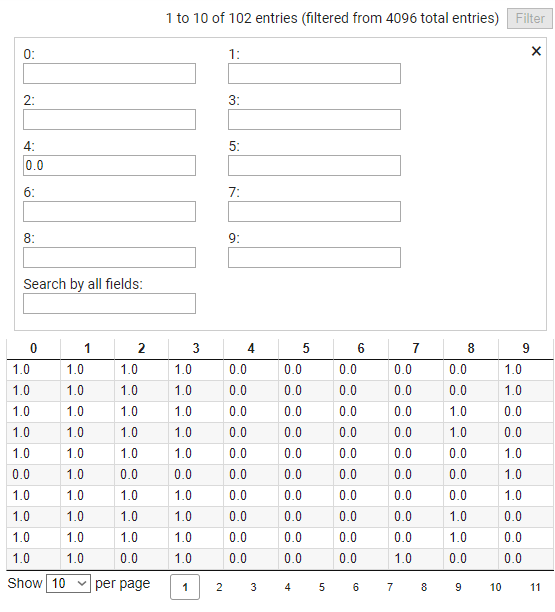

Procedural Genration of Portal2 levels using DCGANs
Group 23 report:
Original Goal
To create a DCGAN algorithm that is trained on a large level corpus to produce simple working levels with interesting structures.
Why Deep Convolutional Generative Adversarial Networks (DCGANs)?
GAN architecture was first developed in 2014 in a paper titled "Generative Adversarial Networks" by Ian Goodfellow et al. A more structured approach called Deep Convolutional Generative Adversarial Network (DCGAN)
was later developed by Alec Radford et al. in 2015 in the paper titled "Unsupervised Representation Learning with Deep Convolutional Generative Adversarial Networks". The architecture is useful in exploring the latent
space of a distribution and produce novel example that lie in that same distribution. DCGANs have been very succesful in generative applications.
Assuming that level structures also form a cohorent distribution in latent space, DCGANs should be able to approximate this distribution to create new levels.
This has been shown to work succefully on 2D examples like Mario.
Data
The Portal 2 has a community workshop where players can upload mods, visual enhancements and new levels for the game. The workshop has a very large corpus of levels for the game. This is one of the reasons why this game
was considered to be ideal for this project.
However, the translation of the levels available on the workshop to a usable form proved too difficult. Instead a new much smaller corpus was created by hand, to increase the effectivity of a smaller corpus, the dataset
included rotations and reflections of the levels, resulting in 8 data points from 1 working level.

While the disadvantages of a smaller corpus are obvious, it lets us work on simple levels with homogenous size, making it easier for us to come up with a proof of concept.

The Model
The discriminator and generator parts of the model mirror each others' structure. The Convolution layers create abstract representaions of the input layer that condense down to a binary value in the discriminator.
In the generator a similar series of transposed convolutions is used to take a 128 dimension latent vector and create a (10,10,10,10) output level.
This model is updated from our milestone presentation.
excessive padding
We have reduced level sizes from 16x16x16 to 10x10x10 to reduce padding, excessive padding can be an issue as it just parameter size without any extra information with 16 cubic levels we had upto 80% padding for some levels. A 10 cubed limit on level size vastly reduces padding percentage.Deeper Network
The network was made deeper to encourage better characteristics in generated level.
Layer (type) Output Shape Param # ================================================================= conv3d_3 (Conv3D) (None, 10, 10, 10, 16) 4336 _________________________________________________________________ leaky_re_lu_15 (LeakyReLU) (None, 10, 10, 10, 16) 0 _________________________________________________________________ conv3d_4 (Conv3D) (None, 5, 5, 5, 32) 13856 _________________________________________________________________ leaky_re_lu_16 (LeakyReLU) (None, 5, 5, 5, 32) 0 _________________________________________________________________ conv3d_5 (Conv3D) (None, 3, 3, 3, 64) 55360 _________________________________________________________________ leaky_re_lu_17 (LeakyReLU) (None, 3, 3, 3, 64) 0 _________________________________________________________________ global_max_pooling3d_1 (Glob (None, 64) 0 _________________________________________________________________ dense_5 (Dense) (None, 1) 65 ================================================================= Total params: 73,617 Trainable params: 73,617 Non-trainable params: 0 _________________________________________________________________
Model: "generator" Layer (type) Output Shape Param # ================================================================= dense_6 (Dense) (None, 1728) 222912 _________________________________________________________________ leaky_re_lu_18 (LeakyReLU) (None, 1728) 0 _________________________________________________________________ reshape_4 (Reshape) (None, 3, 3, 3, 64) 0 _________________________________________________________________ conv3d_transpose_12 (Conv3DT (None, 6, 6, 6, 32) 131104 _________________________________________________________________ cropping3d_2 (Cropping3D) (None, 5, 5, 5, 32) 0 _________________________________________________________________ leaky_re_lu_19 (LeakyReLU) (None, 5, 5, 5, 32) 0 _________________________________________________________________ conv3d_transpose_13 (Conv3DT (None, 10, 10, 10, 16) 32784 _________________________________________________________________ leaky_re_lu_20 (LeakyReLU) (None, 10, 10, 10, 16) 0 _________________________________________________________________ conv3d_transpose_14 (Conv3DT (None, 10, 10, 10, 10) 10250 ================================================================= Total params: 397,050 Trainable params: 397,050 Non-trainable params: 0 _________________________________________________________________
Following the reference architecture as we reduce the number of dimensions in the layer we increase the number of channels.
Results.


Procedural Generation
Procedural Generation is used to create data using computer algorithms (Randomization, Machine learning etc) instead of creating it manually. It is often used in some open environment simulations and games.
Using this method, one can produce seemingly infinitely large environments which would have been inpossible otherwise. There are many such use cases where randomzation algorithms have been used in past but due to complications in further advanced games using randomization algorithms is not very realistic.
So, one can turn to Procedural Generation of Content using Machine Learning (PCGML) to create more realistic environments. Using DCGANs, it is theoretically possible to generate such virtual environments which are indistinguishable from human-made environments.
In our project, we have focused on creating new levels for the 'Portal 2' game using PCGML with DCGAN.
Generating 'Portal 2' levels using PCGML
In this project, we have made some good progress on implementing PCGML in the game Portal 2 and have created some new levels. In our model we have generated level geometry 16*16*16 (max size). We also have 5 distinct level items per level. Namely, Entry Door, Exit Door, Box Dispenser, Buttons and Box. We have not implemented 'connections' between the 'Buttons' and the 'Exit Door' and 'Box Dispenser' in our current model. We have initially proposed two models for these connections, a) Using a simple connection vector and b) Adding a fourth dimension. The first method is not implementable in its current form because it would not allow for a simple forward flow DCGAN. In the second method, adding a new dimension would increase the input data size drastically which is not feasible given the current hardwere limitations. So, at this stage, we are only focused on generating realistic geometry and item placement.
Model Architecture
Our model architecture is based on the paper [1] by Volz et al. titled "Evolving Mario Levels in the Latent Space of a Deep Convolutional Generative Adversarial Network". Our model has only two 3D Convolusion Layers in the Discriminator and two similar Transpose Layers in the Generator. We shrunk our model to only two layers per network to reduce the total size of the initial model.
Dataset
Initially we assumed that we can use thousands of community made models to train our neural net. But unfortunately, the community levels are only availble in '.vmf' format whcich is not readable by our network. The network can pnly read the games own '.p2c' format. Also, it is virtually impossible to convert files from '.vmf' to '.p2c'. So we had to hand create the initial training data. We created 35 levels initially and then using certain symmmetry operations on the dataset we created about 250 levels from those initial levels. We have trained our model in this dataset only.
Model Implementation
Now we will discuss the method for implementing our model and the code used.
Level Encoder: First we define a class for all the items in the game level.
class Item:
properties = []
def __init__(self, proplist):
self.properties = proplist
def developProps(self):
self.index = int(self.properties[0][1])
self.voxelPos = []
cut = self.properties[3][1].find(" ")
i = 0
self.voxelPos.append(int(self.properties[3][1][i:cut]))
i = cut
cut = self.properties[3][1].find(" ", cut + 1)
self.voxelPos.append(int(self.properties[3][1][i:cut]))
self.voxelPos.append(int(self.properties[3][1][cut+1:]))
self.angles = []
cut = self.properties[5][1].find(" ")
i = 0
self.angles.append(int(self.properties[5][1][i:cut]))
i = cut
cut = self.properties[5][1].find(" ", cut + 1)
self.angles.append(int(self.properties[5][1][i:cut]))
self.angles.append(int(self.properties[5][1][cut+1:]))
Then we define a class for all the connections.
class Connection:
def __init__(self, proplist):
self.properties = proplist
def printprops(self):
print(self.properties)
After that, we create a class for the 3D Voxels. Each voxel contains the information about a spesific point in the 3D space inside the game level.
class Voxel:
def __init__(self, solid, portal0, portal1, portal2):
self.solid = solid
self.portal0 = portal0
self.portal1 = portal1
self.portal2 = portal2
self.itemList = []
self.oneHotItem = []
def setSolid(self, solid):
self.solid = solid
def setPortal0(self, portal0):
self.portal0 = portal0
def setPortal1(self, portal1):
self.portal1 = portal1
def setPortal2(self, portal2):
self.portal2 = portal2
def addItem(self,newItem):
self.itemList.append(newItem)
def printVoxel(self):
print(self.solid)
def enterVoxel(self):
ret = [self.solid, self.portal0, self.portal1, self.portal2] + self.oneHotItem
return ret
def makeOneHot(self):
self.oneHotItem = [1,0,0,0,0,0]
for i in self.itemList:
if(i.properties[1][1] == "ITEM_ENTRY_DOOR"):
self.oneHotItem = [0,1,0,0,0,0]
elif(i.properties[1][1] == "IITEM_EXIT_DOOR"):
self.oneHotItem = [0,0,1,0,0,0]
elif(i.properties[1][1] == "ITEM_CUBE"):
self.oneHotItem = [0,0,0,1,0,0]
elif(i.properties[1][1] == "ITEM_DROPPER_CUBE"):
self.oneHotItem = [0,0,0,0,1,0]
elif(i.properties[1][1] == "ITEM_BUTTON_FLOOR"):
self.oneHotItem = [0,0,0,0,0,1]
Now we write a code to generate more levels from the hand-made levels by using a few symmetry operations. After that we save the information from all such levels into a n-dimensional array into a CSV file.
data = []
for k in range(0,11):
print(k)
name = str(k + 1) + ".p2c"
newLevel = Level()
newLevel.LevelRead(name)
newLevel.developOneHot()
Z = newLevel.makeCSVarray()
data.append(Z)
del newLevel
print(np.shape(data))
df = pd.DataFrame(data)
df.to_csv('Data.csv')
We train our model in this dataset.
Training the DCGAN: We are using keras in TensorFlow to make the model. First we make the Discriminator Model.
discriminator = keras.Sequential(
[
keras.Input(shape=(16, 16, 16, 10)),
layers.Conv3D(32, (3, 3, 3), strides=(2, 2, 2), padding="same"),
layers.LeakyReLU(alpha=0.2),
layers.Conv3D(64, (3, 3, 3), strides=(2, 2, 2), padding="same"),
layers.LeakyReLU(alpha=0.2),
layers.GlobalMaxPooling3D(),
layers.Dense(1),
],
name="discriminator",
)
discriminator.summary()
Layer (type) Output Shape Param # ================================================================= conv3d_3 (Conv3D) (None, 10, 10, 10, 16) 4336 _________________________________________________________________ leaky_re_lu_15 (LeakyReLU) (None, 10, 10, 10, 16) 0 _________________________________________________________________ conv3d_4 (Conv3D) (None, 5, 5, 5, 32) 13856 _________________________________________________________________ leaky_re_lu_16 (LeakyReLU) (None, 5, 5, 5, 32) 0 _________________________________________________________________ conv3d_5 (Conv3D) (None, 3, 3, 3, 64) 55360 _________________________________________________________________ leaky_re_lu_17 (LeakyReLU) (None, 3, 3, 3, 64) 0 _________________________________________________________________ global_max_pooling3d_1 (Glob (None, 64) 0 _________________________________________________________________ dense_5 (Dense) (None, 1) 65 ================================================================= Total params: 73,617 Trainable params: 73,617 Non-trainable params: 0 _________________________________________________________________
Now we create the Generator Model by replacing the 'Conv2D' layer with 'Conv2DTranspose' layer and mimicking the rest of the network.
generator = keras.Sequential(
[
keras.Input(shape=(latent_dim,)),
layers.Dense(4* 4 * 4 * 64),
layers.LeakyReLU(alpha=0.2),
layers.Reshape((4, 4, 4, 64)),
layers.Conv3DTranspose(32, (4, 4, 4), strides=(2, 2, 2), padding="same"),
layers.LeakyReLU(alpha=0.2),
layers.Conv3DTranspose(10, (4, 4, 4), strides=(2, 2, 2), padding="same"),
],
name="generator",
)
generator.summary()
Model: "generator" Layer (type) Output Shape Param # ================================================================= dense_6 (Dense) (None, 1728) 222912 _________________________________________________________________ leaky_re_lu_18 (LeakyReLU) (None, 1728) 0 _________________________________________________________________ reshape_4 (Reshape) (None, 3, 3, 3, 64) 0 _________________________________________________________________ conv3d_transpose_12 (Conv3DT (None, 6, 6, 6, 32) 131104 _________________________________________________________________ cropping3d_2 (Cropping3D) (None, 5, 5, 5, 32) 0 _________________________________________________________________ leaky_re_lu_19 (LeakyReLU) (None, 5, 5, 5, 32) 0 _________________________________________________________________ conv3d_transpose_13 (Conv3DT (None, 10, 10, 10, 16) 32784 _________________________________________________________________ leaky_re_lu_20 (LeakyReLU) (None, 10, 10, 10, 16) 0 _________________________________________________________________ conv3d_transpose_14 (Conv3DT (None, 10, 10, 10, 10) 10250 ================================================================= Total params: 397,050 Trainable params: 397,050 Non-trainable params: 0 _________________________________________________________________
Now we train the DCGAN
epochs = 100
gan = GAN(discriminator=discriminator, generator=generator, latent_dim=latent_dim)
gan.compile(
d_optimizer=keras.optimizers.Adam(learning_rate=0.0003),
g_optimizer=keras.optimizers.Adam(learning_rate=0.0003),
loss_fn=keras.losses.BinaryCrossentropy(from_logits=True),
)
gan.fit(
dataset, epochs=epochs, callbacks=[GANMonitor(num_img=1, latent_dim=latent_dim)]
)
Results

Trained generator creating a level with 102 items.
The model currently is not well tuned at all, the model trained over 100 epochs produced results with lots of statistical deficiencies. The level contains 102 items several of which are embedded within solid walls. Levels contain several entry doors and exit doors(there should be only one of each). So, even after 100 epochs and small amount of data, the model was not able to learn simple meta features of the level points to an underfit model that might be too simplistic for the problem.
Conclusion
The model that we have created ran quickly due to the smaller size of the network but in mostly produced nonsensical results.
The generated levels that we are getting are not realistic. The root cause is the lack of input data. Since we have to create the entire dataset by hand,
Given some extra time we should be able to create a larger dataset and train the model more accurately. Another problem is that of excessive padding.
The reference model [1] uses padding because their model accepts a input size of 32*32 but they only have 28*24 sized levels. hence there is a consistent 60% padding.
But our levels are not of fixed size, although most levels do not exceed 800 voxels. Which makes our problem with excessive padding even worse.
Using more consistent level sizes or reducing padding should help with this issue.
Our next goals are the following:
- Creating more hand-crafted levels for a larger input dataset.
- Reducing maximum level size and increasing model parameters by adding additional convolutionaal layers.
- Adding up the 'connections' (requires much more computational power) and creating one completely playable level.